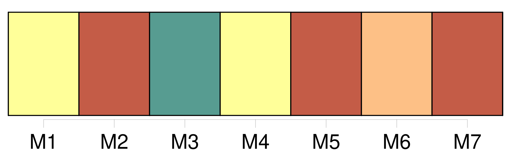

Longueur nb maillons : 20 mentions |
  |
[La mairesse] tint conseil avec les femmes des autres autorités, et il fut décidé que M. le maire irait en personne, avec toute la politesse possible, et s'excusant sur la nécessité d'obéir à des ordres supérieurs, demander à l'inconnue son passe-port. Le maire obéit, et se garda bien de dire que ces ordres supérieurs étaient ceux de [sa femme] [5 phrases] Elle raconta mille historiettes plaisantes sur ses voyages en province, et même, au dessert, elle consentit à réciter à M. le maire des tirades de vers classiques qui le jetèrent dans un délire d'enthousiasme dont [madame la mairesse] eût été sans doute fort effrayée. [4 phrases] C'était [la femme du maire] , qui, ne pouvant résister plus longtemps à [sa] curiosité, venait adroitement et comme par hasard voir madame D …… [Elle] se fût bien gardée d'amener [ses] filles, [elle] eût craint de faire tort à leur mariage si [elle] leur eût laissé entrevoir la comédienne. [2 phrases] [Madame la mairesse] , quoique assez embarrassée de l'accueil qu' [elle] ferait à Laurence ( celle -ci avait autrefois donné des leçons à [ses] filles ), se garda bien d'être impolie. [Elle] fut même gracieuse en voyant la dignité calme qui régnait dans ses manières. Mais, quelques minutes après, une seconde visite étant arrivée, par hasard aussi, [la mairesse] recula [sa] chaise et [parla] un peu moins à l'actrice. [Elle] était observée par une de [ses] amies intimes, qui n'eût pas manqué de critiquer beaucoup [son] intimité avec une comédienne. [1 phrases] Mais, outre que Laurence devint de plus en plus grave et réservée, la présence de [la mairesse] contraignit et gêna les curiosités subséquentes. |
La ressource peut être téléchargée sur la page Ortolang
Si vous avez des questions ou vous voyez des erreurs, merci d'envoyer un mail à silvia.federzoni89@gmail.com
Site développé par S. Federzoni (contact)